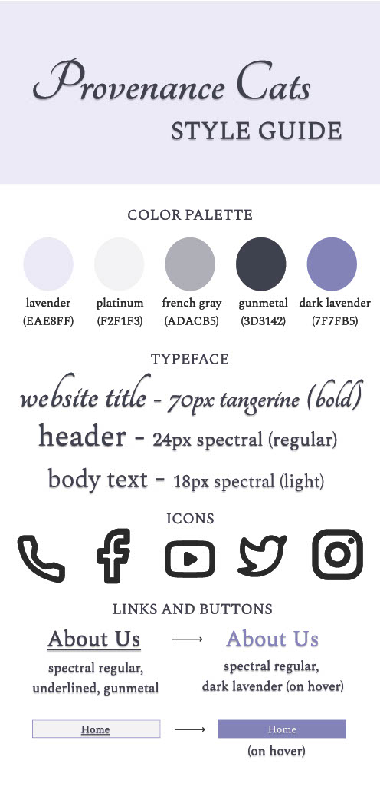

Brief
In this project, we worked as a team to design for the start-up Partiful. Their product, primarily targeting Gen Z and Millenials, enables users to create event pages and send invites to friends, and their mission is to foster real-world connections through technology.
Problem Overview
⟡ PROBLEM STATEMENT: How might we make it easier for hosts and guests to navigate to their past events?
Partiful's existing homepage requires the user to scroll to the right horizontally and press a button to view their past events.
Their main goal was for us to redesign their homepage to more prominently feature a user's past events. According to the founders, whom we corresponded with via email and on a shared project brief document, their main metrics were as follows:
Customer Pain Points:
- As a host, it’s difficult to navigate back to a past event to reminisce or utilize helpful Partiful features like Text Blast
- As a guest, it’s difficult to navigate back to a past event to reminisce, ask for photos, or view already posted photos
- People want to ask for photos from the event and hosts don’t want this to be a heavy lift
- It’s difficult to find the people you recently partied with to either look them up on another platform (Instagram) or ask friends about them
Discussing the brief with the founders cleared up a lot of questions we had. In particular, the founder’s assertion that it was very difficult for the average user to navigate to past events as well as the greater goal of improving the app’s learnability was a great starting point for our design.
Visual Redesign
⟡ Part I: Sketching and Brainstorming


Above are the two sketches I produced for my team.
From these brainstormed ideas, I synthesized a few elements I wanted to include in my final redesign. Namely:
- A single, main image on the page that could attract attention
- Shortening the the introduction text amd moving it to the right of the main image
- Maintaining the top navigation bar but trimming down the number of links, and adding a bottom bar to hold contact information
- Using a decorative element to break up the information, either a gallery (desktop) or a quote (tablet/mobile)
⟡ Part II: Wireframing
I began with making lo-fi wireframes for three screen sizes: for desktop, tablet, and mobile.

As you can see, I streamlined the desktop design by removing the automatic music player and condensing the number of links.
I planned to do this thoughtfully by combining related pages and using dropdowns to group related information,
and attempted to retain the quality of information presented by the site.
The mobile and tablet redesigns are more similar in nature, both featuring a dropdown instead of a traditional navigation bar for ease of tapping with fingers (which are less precise than a mouse).
⟡ Part III: Visual style guide
Then, I created a style guide on Figma to ensure consistency before I start on finalizing the designs. I brainstormed a color scheme, decided on icons I would use for the social media links, and standardized text sizes and fonts for my designs. I also finalized button and link hover behavior.
⟡ Part IV: High-Fidelity Prototyping
With these designs, I returned to Figma to create three hi-fi prototypes.


In both the tablet and mobile designs, the navigation bar is a dropdown instead of a series of links. This is to faciliate easier navigation on smaller screen sizes by offering larger buttons for users to press.
Implementation and Takeaways
As the final step, I implemented my design using HTML and CSS. The link to my final redesigned page is here, and the Github repository is here.
This was one of the first front-to-back, responsive projects I have ever worked on, and I learned a lot about both design principles and HTML/CSS.
Through this experience, I feel much more prepared to tackle real-world problems through design and front-end engineering.